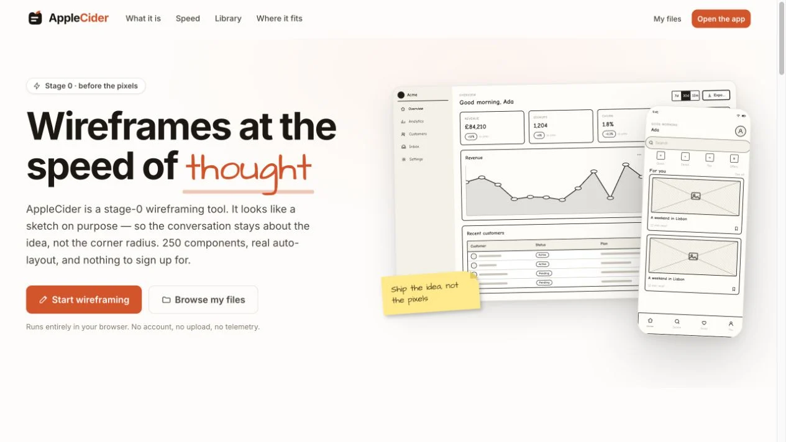

AppleCiderProduct story · 5 min read
Keep the idea rough. Make it real enough to discuss.
A sketch-like wireframing workspace that carries rough screens into clickable prototypes and editable handoff artifacts.
Read the case study
The archived homepage demonstrates the intentionally rough visual language. These are the project’s own wireframe examples.
View full size ↗01 The problem
Can a deliberately unfinished interface still have useful structure?
Early design conversations can become arguments about polish before the underlying idea is settled. I framed AppleCider around an intentionally unfinished visual language: the speed and social permission of a sketch, with the editing capabilities of a digital workspace.
Designed for Designer discussing an early idea. Make an idea concrete while keeping it easy to change.
User context Design assumption
Exploring structure before investing in final visual polish.
- The friction
- A finished-looking mockup can make tentative decisions feel settled.
- Design implication
- Keep the drawing rough and the interactions usable.
Example situation · illustrative scenario. Picture an early design review drifting into a discussion about colour and spacing. The underlying idea is still changing, but the polished screen already feels too finished to challenge.
02 The outcome
Rough enough to revise. Real enough to discuss.
The resulting product connects a sketch canvas, files workspace, clickable prototypes, and handoff formats. The documented 250-component scope supports exploration, while the deliberately unfinished visual language leaves room for revision. My contribution centres on that idea and experience direction.
More about the experience
- The sketch is the point. The visual language makes the stage of the work clear.
- Structure underneath. Editable components and exports give the rough screen a useful next step.
03 The direction
Keep it changeable
Low visual fidelity can preserve room to change. Clickable connections and portable outputs let a rough idea move into the next design conversation.
Product artifact · sketch and handoff workflow
My direction. I kept the sketch-like visual language and gave it the capabilities of a working design tool: move, revise, link, and hand off.
Process and product scope
I separated the experience into a welcoming introduction, a files workspace, and the editing canvas. This gives each moment a clear task: understand the tool, find the work, then explore an idea.
The design loop is sketch, revise, demonstrate, and hand off. Components, undo, snapping, links, and export matter because they let someone change their mind without starting again. Formal user validation remains a next step.
- 250
- documented library components
- 3
- sketch styles
- Local
- browser-owned files
- Sketch
Get an idea onto a movable canvas.
- Revise
Change the structure while it still feels disposable.
- Connect
Link the screens into a prototype.
- Carry forward
Export the structure for the next conversation.
04 Design decisions
Keep early ideas easy to revise.
Open a decision to see the reasoning and trade-off.
01Make the unfinished quality deliberate
Wobbly strokes, a sketch-like type treatment, and three visual styles preserve a low-fidelity feel.
Why this matters. The interface should invite changes to the idea before encouraging arguments about pixel-level finish.
The trade-off. A sketch aesthetic can also reduce legibility. Labels, focus states, and interactions still need the clarity of a serious tool.
02Keep the work portable
The files surface stores documents locally and supports a plain project-file export, alongside image and vector outputs.
Why this matters. A person should be able to keep and move their work without an account or a proprietary cloud workflow.
The trade-off. Browser storage is device-specific and can be cleared. File ownership needs an understandable backup and export path.
03Carry structure into the next artifact
The handoff offers editable output and a written specification, alongside the clickable prototype.
Why this matters. The transition from a rough screen to a working conversation should preserve the decisions already made.
The trade-off. Generated structure is a starting point. Placeholder copy and sketch styling should not be presented as finished product requirements.
05 Reflection
Commit to the structure only as fast as the idea earns it.
The most valuable bridge is between fidelity and commitment. A rough interface can still have meaningful structure, and a useful handoff should preserve that structure without inventing design decisions the sketch never made.
What I would evaluate next proposed work
- give participants an early product idea, ask them to revise it after feedback, and then explain the exported prototype to someone else.
- time to the first understandable screen, effort to revise its structure, and corrections needed after export.
Plan for the group without flattening everyone into one schedule.